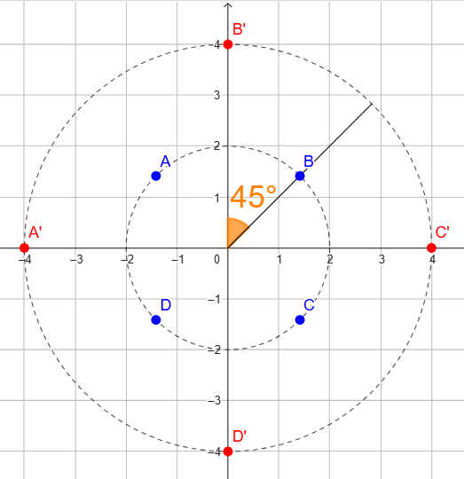
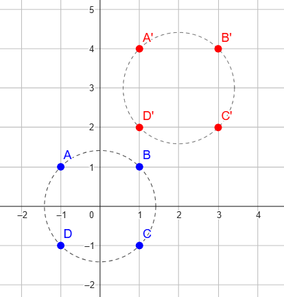

Consideriamo la successione
\[
\begin{cases}
z_0 = c
\\\\
z_n = z_n^2 + c
\end{cases}
\]
con \(c \in \mathbb{C}\).
A seconda del valore complesso che scegliamo per \(c\) la successione può convergere, ovvero i punti si stringono sempre di più attorno ad un certo valore,
oppure può divergere, cioè il raggio del numero complesso è sempre più grande.
Definiremo un valore \(c\)
stabile se la successione associata è convergente,
instabile se la successione associata è divergente,
L'insieme di Mandelbrot è definito come segue
\[
M = \{c \,\,\text{tali che}\,\, c \,\,\text{è stabile} \}
\]
Nel seguente video viene esplorato il frattale connesso a questo insieme: il frattale di Mandelbrot.
Esercizio 2
Consideriamo i numeri complessi
\[
\begin{align*}
\color{blue}{}A\color{black}{} = -\sqrt{2} + \sqrt{2}\,i \qquad \color{blue}{}B\color{black}{} = \sqrt{2} + \sqrt{2}\,i
\\\\
\color{blue}{}C\color{black}{} = \sqrt{2} - \sqrt{2}\,i \qquad \color{blue}{}D\color{black}{} = -\sqrt{2} - \sqrt{2}\,i
\end{align*}
\]
Per quale numero \(w\) devo moltiplicare \(A\), \(\,B\), \(\,C\), \(\,D\) in maniera da ottenere
\(A'\), \(\,B'\), \(\,C'\), \(\,D'\)?

Esercizio 2
Consideriamo i numeri complessi
\[
\begin{align*}
\color{blue}{}A\color{black}{} = -1 + 1\,i \qquad \color{blue}{}B\color{black}{} = 1 + 1\,i
\\\\
\color{blue}{}C\color{black}{} = 1 - 1\,i \qquad \color{blue}{}D\color{black}{} = -1 - 1\,i
\end{align*}
\]
Quale numero \(w\) devo sommare ad \(A\), \(\,B\), \(\,C\), \(\,D\) in maniera da ottenere
\(A'\), \(\,B'\), \(\,C'\), \(\,D'\)?

Esercizio 3
Svolgere la seguente espressione
\[
(i - 1)^{10} + \dfrac{2 - 3i}{i}
\]